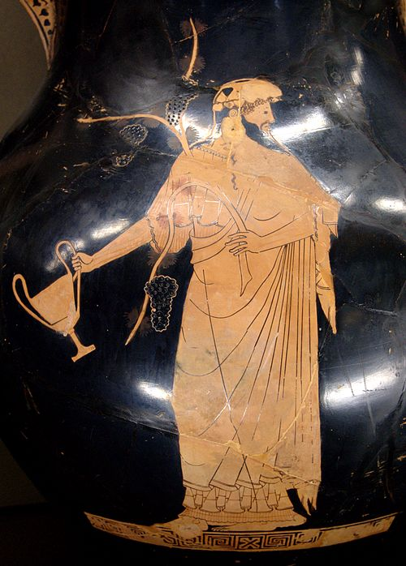
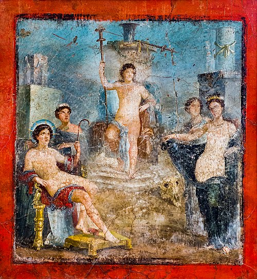

Дио́ни́с (др.-греч. Διόνυσος, Διώνυσος, Δυονισος, микен. di-wo-nu-so-jo[* 2], лат. Dionysus), Вакх, Ба́хус (др.-греч. Βάκχος, лат. Bacchus) — младший из олимпийцев, бог растительности, виноградарства, виноделия, производительных сил природы, вдохновения и религиозного экстаза, а также театра в древнегреческой мифологии. Родился из бедра Зевса. Упомянут в «Одиссее» (XXIV, 74). До открытия Микенской культуры позднейшие исследователи полагали, что Дионис пришёл в Грецию из варварских земель, поскольку его экстатический культ с неистовыми танцами, захватывающей музыкой и неумеренным пьянством казался исследователям чуждым ясному уму и трезвому темпераменту эллинов. Тем не менее ахейские надписи свидетельствуют, что греки знали Диониса ещё до Троянской войны. В Пилосе один из месяцев назывался di-wo-nu-so-jo me-no («месяц Диониса»). В римской мифологии ему соответствует Либер (лат. Liber).

Дионис с канфаром. Амфора работы Берлинского вазописца, Лувр.
Традиционно считается, что Дионис был сыном Зевса и Семелы, дочери Кадма и Гармонии. Узнав, что Семела ждёт ребёнка от Зевса, его супруга Гера в гневе решила погубить Семелу и, приняв вид или странницы, или Берои, кормилицы Семелы, внушила ей мысль увидеть своего возлюбленного во всем божественном великолепии. Когда Зевс снова появился у Семелы, та спросила, готов ли он выполнить любое её желание. Зевс поклялся водами Стикса, что выполнит его, а такую клятву боги нарушить не могут. Семела же попросила его обнять её в том виде, в котором он обнимает Геру, и Зевс предстал в пламени молний, опалив Семелу. Зевс был вынужден вырвать у неё из чрева недоношенный плод, который он зашил у себя в бедре и успешно выносил. Таким образом, Дионис был рождён Зевсом из бедра. Когда Зевс мучился родами, Посейдон угостил его тунцом. Дионис родился шестимесячным и оставшееся время донашивался Зевсом. По версии Диодора Сицилийского, родился на Наксосе и воспитан местными нимфами. По другой версии, родился на склонах горы Дракан на острове Крит. Согласно третьей, его родиной были Фивы в Беотии. У мифов, где фигурирует Семела, вторая мать Диониса, есть продолжение о воспитании бога. Чтобы обезопасить своего сына от гнева Геры, Зевс отдал Диониса на воспитание сестре Семелы Ино и её супругу Афаманту, царю Орхомена, где юного бога стали воспитывать как девочку, чтобы Гера не нашла его. Но это не помогло. Супруга Зевса наслала на Афаманта безумие, в припадке которого Афамант убил своего сына, пытался убить Диониса, и из-за которого Ино со вторым сыном пришлось броситься в море, где их приняли нереиды. Затем Зевс превратил Диониса в козлёнка, а Гермес отнес его к нимфам в Нису (которой приписывали самые разные местоположения). Нимфы спрятали его от Геры, закрыв колыбель ветками плюща. Воспитан в пещере на Нисе. После гибели первых воспитателей, Дионис был отдан на воспитание нимфам Нисейской долины. Там наставник юного бога Силен открыл Дионису тайны природы и научил изготовлению вина. В награду за воспитание сына, Зевс перенёс нимф на небо, так появились, согласно мифу, на небе Гиады, скопления звёзд в созвездии Тельца рядом со звездой Альдебаран.

Дионис, сидящий на троне, с Гелиосом, Афродитой и другими богами. Античная фреска из Помпеи.